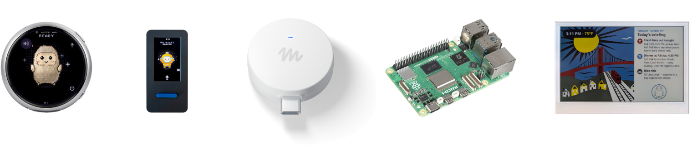

科技產品 T1
Bitchat 在印度 App Store 與 Google Play 下架，網站與 TestFlight 存取也受限
發佈時間
Block／Bitchat｜印度地區可用性
Jack Dorsey 支持的 Bitchat 從印度 Apple App Store 與 Google Play 消失，TestFlight 和官方網站亦傳出受限。這是產品在主要市場的實際存取變更，不是一般政策評論。
- Dorsey 公開的 Apple 通知顯示印度政府要求移除 Bitchat。
- Google Play、TestFlight 與網站也出現限制，但是否全由同一命令造成仍未確認。
完整報告收合報告
事件背景與影響
去中心化通訊工具若同時失去商店與替代安裝入口，使用者更新、安全修補與新用戶加入都會受影響。事件也凸顯政府命令、平台執行與網路封鎖之間的透明度缺口。
事件與發佈依據
TechCrunch 2026-10-03 08:02 PDT 首次完整報導印度下架與其他存取限制；PTI／NDTV 同日交叉報導 Apple 通知。
收錄紀錄
前 14 份日報與同窗 61 列產品表無相同下架事件；首次收錄。
尚待確認
Apple 通知由 Dorsey 公開；Google、印度 IT 部門與 ISP 未回覆，跨平台限制是否來自同一法律命令尚未證實。
相關實體與概念
Block、Bitchat、Jack Dorsey、India、app-store removal、decentralized messaging
科技產品 T2
YouTube Shorts 提高原創內容推薦權重，重傳與聚合頻道可能降低分發
發佈時間
Google／YouTube｜Shorts recommendations
YouTube 調整 Shorts 推薦，優先呈現原創內容；主要依賴重傳、剪輯彙整且未加入實質創作價值的頻道，可能獲得較少推薦。
- 變更作用於 Shorts 的內容推薦，不等於刪除所有非原創影片。
- 官方表示具實質改編、評論或創作價值的 remix 仍可能符合推薦條件。
完整報告收合報告
事件背景與影響
推薦流量是 Shorts 創作者觸及觀眾的核心入口。排序轉向原創可壓低低成本搬運，但也需要平台清楚區分合理 remix、評論與缺乏轉化的重傳。
事件與發佈依據
YouTube 官方 Community 公告日期 2026-10-01；未提供可核實時區，保留日期。
收錄紀錄
前 14 份日報與同窗 61 列產品表無相同推薦排序更新；首次收錄。
尚待確認
官方未公布排序權重、量化門檻與完整 rollout 範圍，實際影響需觀察不同市場與頻道資料。
相關實體與概念
Google、YouTube、Shorts、recommendation system、original content、remix
科技產品 T3

Muse Gadgets 官方裝置陣容，包含 Muse Home Link 與開發板。 Muse Gadgets 官方網站
Meta 開源 Muse Gadgets 韌體與 Linux SDK，並製作 5,000 個 Home Link
發佈時間
Meta｜Muse Gadgets、Home Link
Meta 開放 Muse Gadgets firmware 與 Linux SDK，開發者可讓 Raspberry Pi、ESP32 等硬體連接 Muse。Meta 另製作 5,000 個 Home Link 小型裝置，預計贈送部分訂閱者。
- Linux SDK 與開源 firmware 支援 Raspberry Pi、ESP32 等常見開發平台。
- 5,000 個 Home Link 預計數週內出貨，屬有限數量贈送。
完整報告收合報告
事件背景與影響
Muse 從單一穿戴裝置延伸為可由第三方硬體接入的 AI 平台。開源介面可加速原型設計，但不代表 Meta 已承諾把每種實驗裝置量產為消費產品。
事件與發佈依據
TechCrunch 2026-10-02 17:45 PDT 首次報導；Muse Gadgets 專案頁提供開發文件。
收錄紀錄
前 14 份日報與同窗 61 列產品表無此開源發布；2026-09-28 的 Muse Charm 是不同硬體事件。
尚待確認
Home Link 的資格、地區與長期支援未完整公布；開源專案不是完整量產產品路線承諾。
相關實體與概念
Meta、Muse、Home Link、Raspberry Pi、ESP32、open-source hardware
科技產品 T4
iOS 27.0.1 可預防 iPhone 18 Pro Max 的 AT&T 斷網，但已失去服務的裝置需換機
發佈時間
Apple／AT&T｜iPhone 18 Pro Max、iOS 27.0.1
Apple 發布 iOS 27.0.1 與 carrier settings update，供 AT&T 的 iPhone 18 Pro Max 使用者預防網路問題。已進入無服務狀態的少數裝置無法靠更新恢復，需聯絡 Apple 或 AT&T 更換。
- 未受影響裝置應安裝 iOS 27.0.1 並更新 carrier settings。
- 已失去行動服務的受影響手機須依 Apple／AT&T 流程換機。
完整報告收合報告
事件背景與影響
同一事故同時存在「軟體可預防」與「既有故障需硬體處理」兩種路徑。若把兩者混為一談，使用者可能在已故障手機上反覆更新，延誤換機。
事件與發佈依據
Engadget 標示 2026-10-02 22:10 EST，依頁面字面換算；AT&T 支援頁最後更新日期 2026-10-02。
收錄紀錄
前 14 份日報與同窗 61 列產品表無相同網路修復與換機事件；首次收錄。
尚待確認
AT&T 說更新可預防問題；Apple／媒體說明已受影響裝置不能靠軟體恢復，兩者描述的是不同狀態，並非互相否定。
相關實體與概念
Apple、AT&T、iPhone 18 Pro Max、iOS 27.0.1、carrier settings、replacement
全球焦點 1
續報｜Russia 攻擊 Ukraine 造成至少六死並損壞 Kyiv Northern Bridge
發佈時間
Russia 對 Ukraine 的攻擊造成至少六人死亡，Kyiv 的 Northern Bridge 受損並暫停通行。這是橋梁交通連續第三天受到戰事干擾。
- 至少六人死亡，Northern Bridge 因受損停止交通。
- Russia 表示大規模打擊仍會持續，並呼籲外國人與外交人員離開。
完整報告收合報告
事件背景與影響
首都關鍵交通設施受損會直接影響通勤、救援與物流，也顯示攻擊壓力不只集中在前線。傷亡與設施評估仍可能隨清理更新。
事件與發佈依據
AP 2026-10-03 09:39:55 UTC 發布最新傷亡與橋梁受損情況。
收錄紀錄
前次收錄 2026-10-03，內容是 Ukraine 首次實戰使用 FP-7；今日新增是 Russia 另一輪攻擊造成死亡、Northern Bridge 損壞與交通中斷。
尚待確認
Russia 對攻擊目標與後續行動的說法未獲 Ukraine 獨立確認；傷亡可能修正。
相關實體與概念
Russia、Ukraine、Kyiv、Northern Bridge、civilian infrastructure
全球焦點 2
英國檢方指兩名伊朗男子策畫以氯氣炸彈攻擊 Manchester 猶太會堂
發佈時間
英國檢方指兩名伊朗男子監視 Manchester 的 Heaton Park Hebrew Congregation 與 Jewish Museum，並稱第三人疑似從 Iran 指揮、提供氯氣炸彈製作指示。
- 兩名男子上月被捕，周五遭起訴並續押至 10 月 23 日。
- 警方表示案件目前被視為孤立事件，沒有持續中的公共威脅。
完整報告收合報告
事件背景與影響
案件把宗教場所安全、跨境指揮與化學攻擊方法連在一起。現階段是刑事指控而非定罪，公開討論須避免把檢方版本當成已證實全貌。
事件與發佈依據
AP 2026-10-03 13:49:50 UTC 報導檢方在法庭提出的指控。
收錄紀錄
前 14 份日報無相同策畫案；首次收錄。
尚待確認
被告尚未答辯，第三人身分、指揮關係與實際攻擊能力仍待司法程序驗證。
相關實體與概念
Manchester、Heaton Park Hebrew Congregation、Jewish Museum、chlorine bomb、counterterrorism
全球焦點 3
Latvia 舉行國會選舉，安全部門監控 Russia 混合威脅但未見系統性干預
發佈時間
約 156 萬名 Latvia 選民投票改選 100 席 Saeima。German Eurofighters 參與空域安全，Latvia 安全部門表示監測到影響活動風險，但尚未發現系統性干預。
- 政黨需跨過 5% 得票門檻才能進入國會。
- 最終結果預計在研究截點後陸續出爐，本文不預測席次。
完整報告收合報告
事件背景與影響
Latvia 位於 NATO 東翼，選舉結果會影響防衛、對 Russia 政策與執政聯盟。投票日安全評估不能取代最終計票，也不能排除個別資訊操作。
事件與發佈依據
AP 2026-10-03 08:09:36 UTC 報導投票開始與安全部署；截點前尚無最終結果。
收錄紀錄
前 14 份日報無相同選舉事件；首次收錄。
尚待確認
截點前只有投票與安全資訊，尚不能判定勝負或組閣。
相關實體與概念
Latvia、Saeima、NATO、Germany、hybrid threats、election security
全球焦點 4
續報｜Spain 多城住房抗議擴大，Valencia 警方使用催淚瓦斯與橡膠彈
發佈時間
Spain 多個城市出現大規模住房抗議，示威者要求租金與可負擔住房改革。Valencia 在警方防線遭突破後使用催淚瓦斯與橡膠彈，Madrid 則有要求 general strike 的聲音。
- 多城有數萬人參與；初步未報 Valencia 衝突造成示威者受傷。
- Spain 租屋者平均支出約占收入 40%，EU 平均約 18%。
完整報告收合報告
事件背景與影響
個案驅離已轉為全國性政策壓力，並和議會否決緊急措施直接連結。Spain 過去十年租金約翻倍，租屋家庭負擔明顯高於 EU 平均。
事件與發佈依據
抗議於 2026-10-03 實際發生；AP 頁面較早建立，因此以事件日而非文章更新時間收錄。
收錄紀錄
前次收錄 2026-09-28 的 Maricarmen 驅離與 Madrid 示威營地；今日新增是議會否決緊急住房措施後，多城數萬人示威及 Valencia 警民衝突。
尚待確認
各城人數與執法細節仍可能更新；事件日可確認，但來源頁面發布時刻不作收錄依據。
相關實體與概念
Spain、Madrid、Valencia、housing crisis、rent burden、protests
全球焦點 5
Kenya Salama 多車事故造成 17 死，罹難者多為 Catholic pilgrims
發佈時間
Kenya Salama 附近一輛卡車超車失敗，引發多車碰撞。載有前往祈禱地點的 Catholic pilgrims 之廂型車司機與 16 名乘客死亡。
- 共 17 人死亡，包括廂型車司機與 16 名乘客。
- 警方稱事發路段是過去已知的事故黑點。
完整報告收合報告
事件背景與影響
事故造成單次重大傷亡，也再次暴露已知事故黑點的道路安全問題。初步原因來自警方，完整責任仍需機械、路況與行車紀錄調查。
事件與發佈依據
AP 2026-10-03 08:34:14 UTC 報導警方初步調查。
收錄紀錄
前 14 份日報無相同交通事故；首次收錄。
尚待確認
超車失敗是初步警方說法，速度、車況與道路責任尚待正式調查。
相關實體與概念
Kenya、Salama、Catholic pilgrims、road safety、multi-vehicle crash
全球焦點 6
續報｜Houthis 宣稱以飛彈與 drones 攻擊 Riyadh 的 Aramco 設施
發佈時間
Yemen 的 Houthis 表示以 ballistic missiles 與 drones 攻擊 Riyadh 的 Aramco 設施，稱是報復 Saudi 對 Sanaa 與其他省分的行動。
- Houthis 宣稱同時使用 missiles 與 drones。
- Saudi 與 Aramco 在截點前未提供可獨立核對的完整損害說明。
完整報告收合報告
事件背景與影響
若設施確實受擊，可能提高 Saudi 能源基礎設施與區域供應風險；但目前可靠報導只確認聲明存在，不能據此推定命中或損害。
事件與發佈依據
Reuters 轉載頁於 2026-10-03 報導 Houthis 當日聲明；因時區不明，只保留日期。
收錄紀錄
前次相關攻擊收錄於 2026-09-20，當時是 Riyadh／Yanbu 攻擊宣稱；今日新增是針對 Riyadh Aramco 設施的新一輪飛彈與 drone 攻擊宣稱。
尚待確認
攻擊、命中與損害主要是 Houthis 單方聲明，尚未獲獨立驗證。
相關實體與概念
Houthis、Yemen、Saudi Arabia、Riyadh、Aramco、energy infrastructure
全球焦點 7
續報｜Gaza City 公寓遭 Israeli strike 造成五死，其中四名為女性
發佈時間
Gaza City 一棟公寓遭 Israeli strike，造成五人死亡，其中四名是女性，兩名死者屬當地 Christian minority。
- 五名死者中有四名女性。
- AP 報導其中兩名死者屬 Gaza 的 Christian minority。
完整報告收合報告
事件背景與影響
平民住宅傷亡持續增加 Gaza 的人道壓力，也使少數宗教社群承受更高風險。攻擊目標與軍方即時說明不足，不能推定死者身分或軍事目的。
事件與發佈依據
AP 2026-10-03 06:19:06 UTC 首報；Reuters／El Pais 同日後續交叉報導。
收錄紀錄
前次收錄 2026-10-01 的另一場 Gaza 攻擊；今日新增是不同地點的公寓受擊與新傷亡。
尚待確認
傷亡由醫療與地方來源整理；Israeli military 對目標與行動的完整說明尚未取得。
相關實體與概念
Gaza City、Israel、Palestinians、civilian casualties、Christian minority
全球焦點 8
Libya 統一談判受 Saddam Haftar 涉入舊無人機攻擊的新指控衝擊
發佈時間
Libya GNU 消息人士表示，在嫌疑人供詞把 Saddam Haftar 與 August 的 drone attacks 連結後，與其合作變得難以維持，美國支持的安全力量整合與統一談判因而受衝擊。
- August 的 drone attacks 與 9 月 5 日 arrests 是舊背景，10 月 3 日新節點是談判與整合方案受阻。
- 關聯 Saddam Haftar 的資訊來自被拘留嫌疑人供詞與 GNU 消息人士。
完整報告收合報告
事件背景與影響
Libya 的安全機構整合是降低東西分裂與武裝衝突的核心。若主要參與者被排除或失去互信，美國支持的整合路線可能停滯。
事件與發佈依據
The Guardian 2026-10-03 05:00 EDT 首次完整報導談判受阻與遭拘留嫌疑人的供詞；August 攻擊只作背景。
收錄紀錄
前 14 份日報無相同談判受阻與指控事件；首次收錄。
尚待確認
指控尚非公開司法裁判，Haftar 陣營的完整回應與供詞可信度仍待檢驗。
相關實體與概念
Libya、GNU、Saddam Haftar、Khalifa Haftar、Zawiya、security integration
全球焦點 9
ShinyHunters 涉案關鍵人物在 Jordan 被拘留，據報正協助辨識其他 hackers
發佈時間
兩名消息人士稱，ShinyHunters 涉案關鍵人物 Saif al-Din Khader（Rey）已在 Jordan 被拘留，並正協助辨識其他 hackers。FBI 只表示調查持續，拒絕確認個案細節。
- Khader 據報於本周稍早在 Jordan 被拘留。
- FBI 未確認合作內容，只說相關調查仍在進行。
完整報告收合報告
事件背景與影響
ShinyHunters 被連結到多起大規模資料竊取；若合作獲證實，可能擴大跨國調查與受害企業通知範圍。但匿名來源不能取代正式拘留或起訴文件。
事件與發佈依據
Reuters 轉載頁 2026-10-03 11:15 EDT 報導兩名消息人士說法。
收錄紀錄
前 14 份日報無相同拘留事件；首次收錄。
尚待確認
拘留與合作細節來自匿名消息人士，司法程序與證據範圍尚未公開。
相關實體與概念
ShinyHunters、Saif al-Din Khader、Jordan、FBI、data theft、cybercrime
全球焦點 10
續報｜North Korea 將 10 月 3 日發射辨識為可變軌中程戰略飛彈
發佈時間
North Korea 表示 10 月 3 日從 Wonsan 附近發射的是可在低空改變軌跡的中程戰略飛彈，並宣稱具 AI 能力。South Korea 與 Japan 的距離估計不同，也未立即確認這些性能說法。
- South Korea 估計飛行超過 700 公里，Japan 估計約 680 公里。
- North Korea 宣稱低空變軌與 AI 能力，South Korea 尚未確認。
完整報告收合報告
事件背景與影響
若可變軌能力成立，將增加區域飛彈防禦的追蹤難度；但技術描述來自 North Korea，現有飛行距離與外部觀測不足以驗證完整性能。
事件與發佈依據
The Hindu／PTI 2026-10-03 20:51 IST 首次在本次視窗內報導 North Korea 的型號與能力說法；發射初報早於本次下界，不作今日時間基礎。
收錄紀錄
前次收錄 2026-10-03 的發射初報，當時型號與性能未明；今日新增是 KCNA 稱其為 intermediate-range strategic missile，具低空變軌與 AI 能力。
尚待確認
飛行距離有約 680 公里與超過 700 公里兩種估計；可變軌與 AI 能力是 North Korea 單方宣稱。
相關實體與概念
North Korea、Kim Jong Un、Kim Yo Jong、Wonsan、intermediate-range missile、missile defense
研究備註
時間、來源與後續追蹤
研究截點 2026-10-04 08:02:10（Asia/Taipei）
研究時間與範圍
研究截點：2026-10-04 08:02:10（Asia/Taipei）。全球新聞：2026-10-03 08:02:10 至 2026-10-04 08:02:10（Asia/Taipei）。科技產品：2026-09-20 08:02:10 至 2026-10-04 08:02:10（Asia/Taipei）。
後續追蹤 1
Bitchat 印度下架的法律命令與跨平台執行範圍：確認命令是否同時涵蓋 Apple、Google、TestFlight 與網站，並追蹤 Block、平台和法院的正式回應。
後續追蹤 2
Latvia 選舉最終席次與組閣：截點後核對官方最終結果、5% 門檻與 coalition negotiations，不把投票日預測當成結果。
後續追蹤 3
Riyadh Aramco 攻擊宣稱是否有獨立證據：等待 Saudi、Aramco、衛星影像或可靠現場資料，分開「Houthis 宣稱發動」與「設施確實命中／受損」。
後續追蹤 4
North Korea 飛彈性能與區域防衛評估：比較 South Korea、Japan 與後續技術分析對射程、低空變軌和 AI 宣稱的驗證結果。